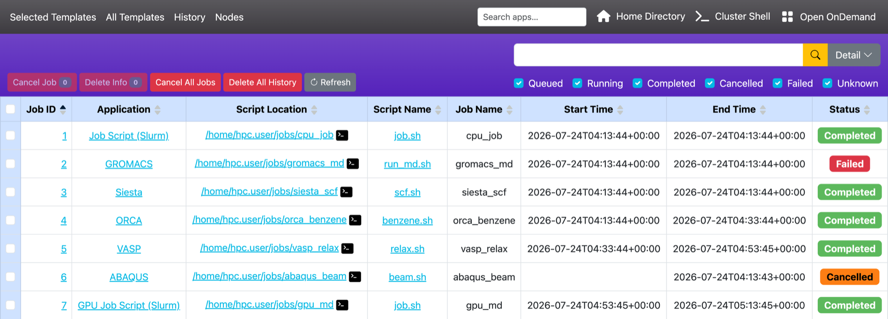
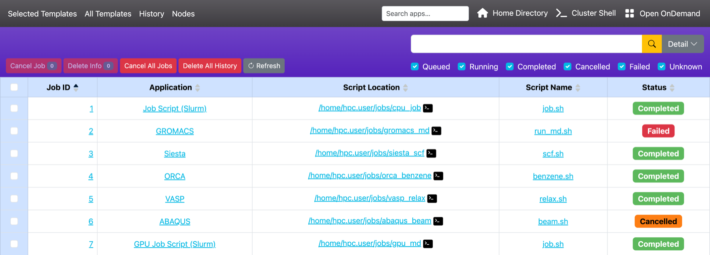
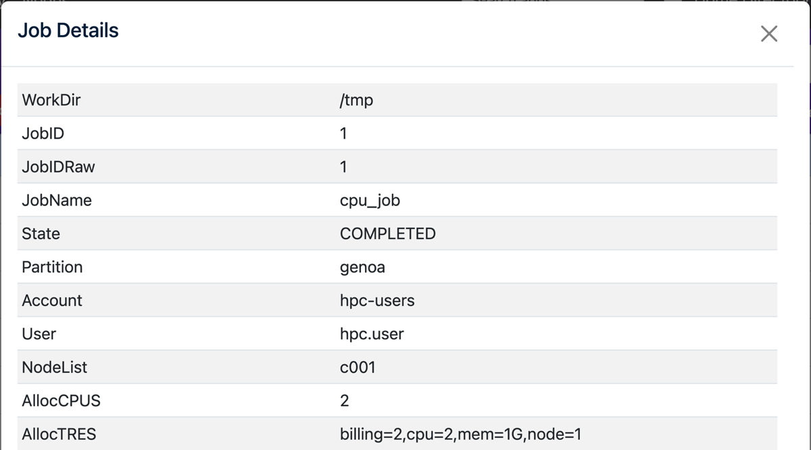
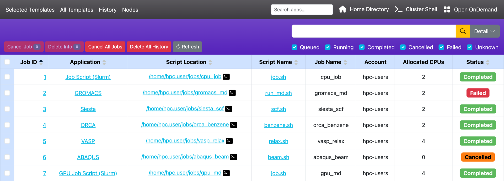
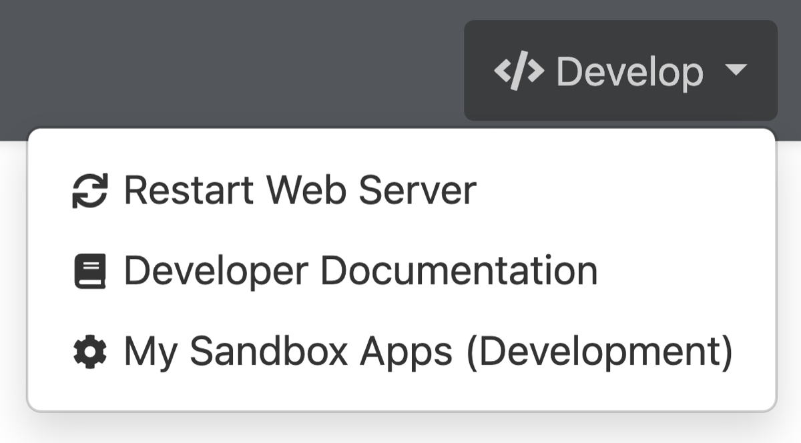
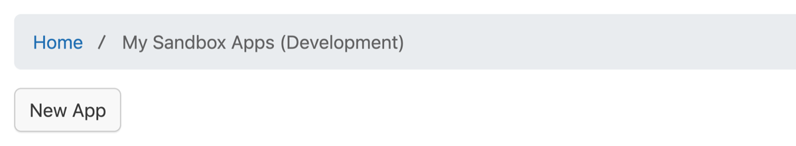
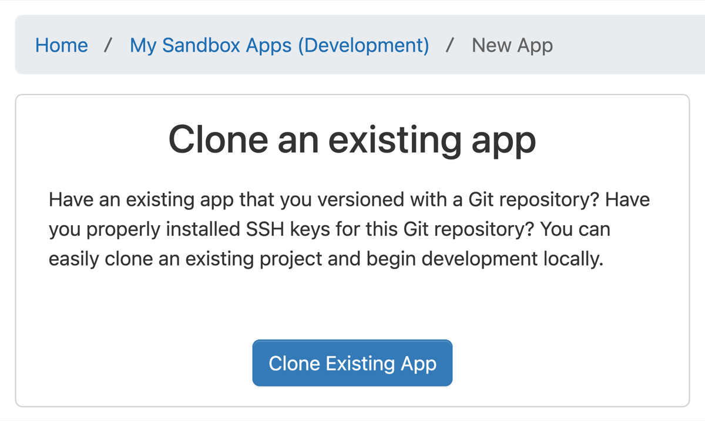
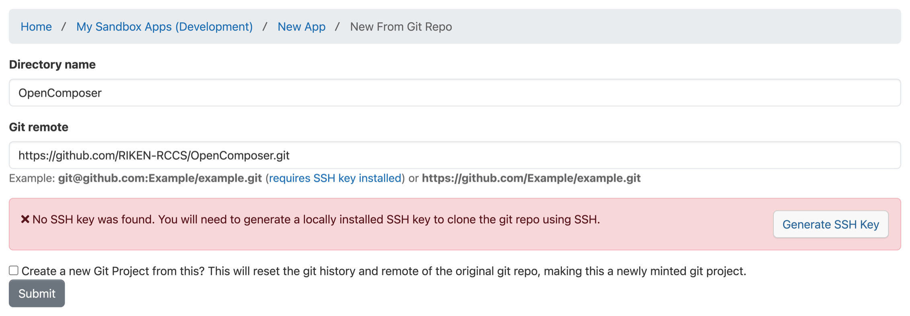
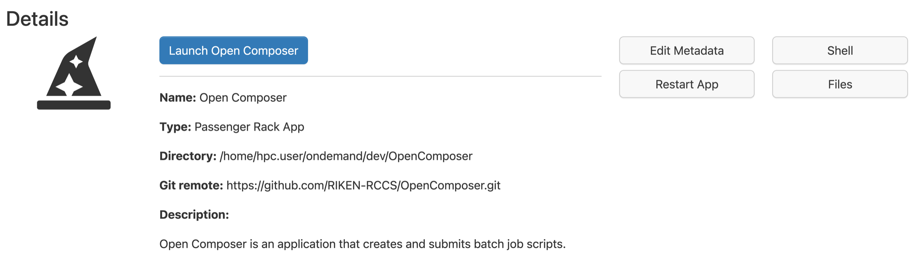

Open Composerインストールマニュアル
1. インストール
Open ComposerはOpen OnDemand上で動作します。Open OnDemandのアプリケーションディレクトリ/var/www/ood/apps/sys/にOpen Composerを保存してください。
ここにインストールしたアプリケーションは、ユーザ毎の設定を必要とせず、そのOpen OnDemandのすべてのユーザが自動的に利用できるようになります。
$ cd /var/www/ood/apps/sys/ $ sudo git clone https://github.com/RIKEN-RCCS/OpenComposer.git opencomposer
ディレクトリ名はアプリケーションのURLの一部になります（/pun/sys/opencomposer）。また、後述する4. OOD統合インストールのOOD統合モードを有効にする場合にも影響します。そのプロキシは既定でopencomposerを対象とするため、別の名前でインストールした場合は、それに合わせてOC_EMBED_APP_NAMEを設定してください。
gemの事前インストール 任意（推奨）
Open Composerは、ユーザが最初にアプリケーションを開いたときに、依存するRubyのgemを自動的にインストールします。 その初回のアクセスでユーザが待たされることを避けるため、管理者が事前にgemをインストールしておくことができます。
$ cd /var/www/ood/apps/sys/opencomposer $ sudo cp misc/Gemfile . $ sudo bundle install
Gemfileが更新されるgit pullを行った後は、bundle installを再度実行してください。
ネットワークと外部への依存
module_loadウィジットとdependent_module_selectウィジット、および自動的に付与されるGPUのバッジは、クラスタで利用可能なモジュールのカタログによって動作します。Open Composerは、conf.yml.erbのmodules_list_urlで指定されたURLからそれを取得します。この設定はデフォルトでは空であり、その場合この機能は動作しません。モジュールのウィジットはバージョンを提示せず、GPUのバッジも自動的には付与されません。それ以外の機能には影響しません。
この設定を行う場合、Passengerのアプリケーション（PUN）から、そのホストへの外向きのネットワークアクセスが必要です。取得する文書は次の形式のJSONでなければなりません。
{
"GROMACS": {
"versions": ["2025.2-foss-2023a", "2024.5-foss-2023a"],
"default": "2025.2-foss-2023a",
"domains": ["chem"]
}
}
domainsの一覧にgpuを含むモジュールは、同名のアプリケーションに自動的にGPUのバッジを付与します。アプリケーションは、manifest.ymlのtagsキーで明示的にバッジを付与することもできます。
この一覧はページの描画中に取得されます。Open Composerのすべてのページで参照が発生し、モジュールのウィジットが行う/_module_availの要求でも発生します。
応答は<data_dir>/.module-list-cache.jsonにキャッシュされ、キャッシュのファイルが24時間より古くなった場合にのみ再取得されます。
接続のタイムアウトは10秒、読み込みのタイムアウトは15秒です。取得に失敗した場合、既存の（古い）キャッシュのファイルが使用されます。キャッシュのファイルが無い場合、一覧は空として扱われます。ユーザにはエラーが表示されないため、ウィジットが空のままになる場合はPUNのログを確認してください。
トラブルシューティング
Open Composerは、実行したジョブスケジューラの操作毎に、標準出力へログの行を書き出します。
Open OnDemandのPassengerは標準出力をユーザ毎のPUNのログ/var/log/ondemand-nginx/<user>/error.logに取り込むため、ジョブの投入が期待どおりに動作しない場合は、このファイルを確認してください。
このパスにアプリケーション毎の要素が無いことに注意してください。ユーザ毎にPUNは1つであり、そのユーザが開くすべてのOpen OnDemandのアプリケーション（ダッシュボードを含む）が同じファイルに書き出します。
Open Composerが出力する各行は次の形式です。
[<time>] [Open Composer] <action> : scheduler=<scheduler class> : <key>=<value> : ...
Passengerは取り込んだすべての行の先頭にApp <pid> output:を付加するため、上記のテキストは行の先頭ではなく途中に現れます。
これらの記録を要求のログや他のアプリケーションのログと区別するには、[Open Composer]のタグで絞り込んでください。
その際は固定文字列としての一致を用いてください。-Fを付けないと角括弧が文字クラスとして解釈され、すべての行が一致してしまいます。
$ sudo grep -F '[Open Composer]' /var/log/ondemand-nginx/<user>/error.log
末尾のキーと値の組は操作によって異なり、該当する場合にcluster、job_ids、app_dir、app_name、category、script_path、command、resultが含まれます。空の値は省略されます。記録される操作は次のとおりです。
Submit jobとSave job fileCancel job、Cancel all jobs、Delete job information、Delete all job historyRun commands in the check sectionとRun commands in the submit section（実行したコマンドも記録されます）Ensure SSH key— 実際に鍵が作成された場合、または生成に失敗した場合にのみ記録され、利用可能な鍵がすでに存在した場合は記録されません
2. 設定
./conf.yml.erb.sampleを参考にして./conf.yml.erbを作成してください。このサンプルにはすべての設定項目がデフォルト値とともに記載されているため、項目毎に本文書を参照することなく、そのまま編集できます。
$ cd opencomposer $ sudo cp conf.yml.erb.sample conf.yml.erb
下記の分類はconf.yml.erb.sampleの番号付きの節と同じ順序で並んでいるため、ファイルと本文書を並べて読むことができます。
Open Composerを動作させるために設定が必要なものから、保存・表示される内容、そして外観に関するものへと並んでいます。値の設定が必須なのは必須の2項目のみです。
1. 必須
apps_dirとschedulerは必須です。schedulerはclustersの中にクラスタ毎に定義しても構いません。
| 項目名 | 設定内容 | デフォルト値 |
|---|---|---|
| apps_dir | アプリケーションのディレクトリ | (None) |
| scheduler | ジョブスケジューラ（slurm、pbspro、miyabi、sge、fujitsu_tcs） | (None) |
2. クラスタとジョブスケジューラ
Open Composerがジョブスケジューラに到達する方法、すなわちスケジューラのコマンドが置かれている場所と、それをWebノード上で実行するのかログインノード上でSSH経由で実行するのかを設定します。ここにある項目はすべてサイト固有であり、デフォルト値はありません。そのため、スケジューラのコマンドがWebノード上にありPATHに含まれているサイトでは、すべて未設定のままで構いません。このうち4つの項目には独立した節があります（2.1、2.2、2.3、2.4）。
| 項目名 | 設定内容 | デフォルト値 |
|---|---|---|
| clusters | クラスタの定義（2.1. clustersを参照） | (None) |
| login_node | ログインノードのホスト名。ナビゲーションバーの「Shell Access」のリンク、履歴ページとアプリケーションページのスクリプトの保存先の横にあるターミナルのショートカット、およびログインノードでコマンドを実行するアプリケーションのフォーム（例えばapps/SlurmBasicで「Project」のドロップダウンを生成するsacctmgrの問い合わせ）で使用されます。未設定の場合、2つのページのショートカットは表示されませんが、ナビゲーションバーのリンクは表示されます（show_shell_accessを参照） | (None) |
| ssh_wrapper | SSHを用いて他のノードのジョブスケジューラを用いる場合のコマンド | (None) |
| bin | ジョブスケジューラのコマンドが置かれているディレクトリ。Open Composerが動作しているマシン上に<bin>/<command>が存在する場合にのみ有効です。そのファイルが存在しない場合は、コマンド名のみが使用され、PATHから解決されます。ssh_wrapperを用いる一般的な構成では、コマンドは実際にはリモートホスト上で実行されるため、ローカルでの存在確認は失敗し、binは無視されます。その場合はbin_overridesを使用してください。こちらは存在確認を行わず、常に適用されます | (None) |
| bin_overrides | ジョブスケジューラの各コマンドのパス（2.2. bin_overridesを参照） | (None) |
| scheduler_env | ジョブスケジューラのコマンド実行時に追加する環境変数（2.3. scheduler_envを参照） | (None) |
| copy_environment | Slurmのジョブ投入時にPUNの環境変数をコピーするかどうか（2.4. copy_environmentを参照） | false |
| sge_root | Grid Engineのコマンドに対してSGE_ROOTとして設定される値。ジョブの投入とキャンセルだけでなく、履歴のテーブル、ノードページ、ジョブの詳細のモーダルを含むすべての要求で設定されます。ただし、環境にSGE_ROOTがまだ設定されていない場合にのみ設定されるため、PUNが継承している値が常に優先されます | (None) |
3. SSH鍵の準備
ensure_ssh_keyがtrueの場合、「Submit」を押すと、Open Composerはジョブを投入する前にユーザの~/.sshディレクトリを確認し、鍵が存在しなければ鍵を用意します。これは、ユーザのホームディレクトリを共有しているログインノードへSSHでジョブを投入するサイトを想定した機能です。
この確認では、~/.sshが存在しない場合はそれを作成し、いずれの場合もそのモードを0700に設定します。次に、id_ed25519、id_rsa、id_ecdsa、id_dsa、およびed25519、rsa、ecdsa、dsaの各種類についての<ssh_key_name>_<type>を探します。これらのいずれかが存在する場合、確認は直ちに終了します。既存の鍵が上書きされることは決してありません。存在しない場合は、次の処理を行います。
- パスフレーズを空にし、コメントを
Open Composer auto-generated keyとしてssh-keygenを実行し、~/.ssh/<ssh_key_name>_<ssh_key_type>（モード0600）とその.pubファイル（モード0644）を書き出します。 ~/.ssh/authorized_keys（モード0600）に、その公開鍵がまだ含まれていない場合に追記します。~/.ssh/config（モード0600）に、その鍵のファイル名がまだ現れていない場合、IdentityFile ~/.ssh/<ssh_key_name>_<ssh_key_type>の行を含むHost *のブロックを追記します。sshが自動的に提示するのはid_*の鍵のみであるため、このブロックはすべてのSSHのホストを対象とします。
利用可能な鍵がすでに存在した場合を除き、結果はPUNのログに書き出されます。失敗した場合も記録されますが、ジョブの投入は妨げられません。
| 項目名 | 設定内容 | デフォルト値 |
|---|---|---|
| ensure_ssh_key | ジョブの投入時に上記のSSH鍵の確認を行うかどうか（trueまたはfalse） | false |
| ssh_key_type | ssh-keygen -tに渡す鍵の種類。ed25519、rsa、ecdsaを指定できます。rsaの鍵は-b 4096で生成されます。それ以外の値はed25519に置き換えられます | ed25519 |
| ssh_key_name | 生成される鍵のファイルの基本名。ファイル名は<ssh_key_name>_<ssh_key_type>になります。英数字、_、.、-以外の文字は除去され、何も残らない場合はopencomposerが使用されます | opencomposer |
4. データとモジュール
Open Composer自身の状態を保存する場所と、module_loadウィジットおよびdependent_module_selectウィジット、ならびに自動的に付与されるGPUのバッジが読み込む、任意の環境モジュールのカタログを設定します。
このカタログはOpen Composerの一部ではなく外部への依存であるため、modules_list_urlを設定する前に、1章のネットワークと外部への依存を参照してください。そこでは、必要なJSONの形式、Webノードに必要な外向きのネットワークアクセス、応答のキャッシュ方法、取得に失敗した場合の動作を説明しています。
| 項目名 | 設定内容 | デフォルト値 |
|---|---|---|
| data_dir | 投入したジョブの情報の保存先 | ${HOME}/composer |
| modules_list_url | 利用可能な環境モジュールのカタログのJSONのURL。module_loadウィジットとdependent_module_selectウィジット、および自動的に付与されるGPUのバッジで使用されます（1章のネットワークと外部への依存を参照）。空の場合、この機能は無効になります | (None) |
5. テンプレートとスクリプト
ユーザが到達できるアプリケーションとテンプレート、およびスクリプトのファイルブラウザの提示方法を設定します。
| 項目名 | 設定内容 | デフォルト値 |
|---|---|---|
| generic_apps_dir | アプリケーションの一覧には表示されないが直接リンクできる、非表示の汎用アプリケーション（例えば汎用のSlurmのフォーム）を格納するディレクトリ | ./generic_apps |
| external_reload_app | 履歴ページからOpen Composer以外で投入されたジョブを読み込むときに開く、generic_apps_dir内のサブフォルダ | Slurm |
| show_load_script | 全画面のファイルブラウザを開く「Load or Create a Script from Disk」ボタンを、「Selected Templates」と「New Custom Template」のページに表示するかどうか（trueまたはfalse） | true |
| load_script_label | 「Load or Create a Script from Disk」ボタンのラベル。ファイルブラウザのページの見出しとページタイトルにも使用されます | Load or Create a Script from Disk |
| new_script_featured_category | 「All Templates」と「New Script」のページで先頭に表示するテンプレートの、manifest.ymlのカテゴリ名。大文字と小文字を区別せずに照合され、残りのテンプレートはアルファベット順で続きます | Slurm Submit Templates |
6. 履歴
履歴ページに表示する内容と、ジョブスケジューラから読み直すのではなくOpen Composer自身がどこまで保存するかを設定します。列のキーは2.5. historyに一覧があります。
| 項目名 | 設定内容 | デフォルト値 |
|---|---|---|
| history | 履歴ページの追加表示項目（2.5. historyを参照）。この設定を省略した場合、7つの特殊な変数すべてが表示されます | OC_HISTORY_JOB_NAME, OC_HISTORY_PARTITION, OC_HISTORY_SUBMISSION_TIME, OC_HISTORY_START_TIME, OC_HISTORY_END_TIME, OC_HISTORY_OUTPUT_FILE, OC_HISTORY_ERROR_FILE |
| history_store_script | バッチスクリプトの全文を履歴のデータベースに保存するかどうか。falseにすると、常にsacct -Bで取得します | true |
| history_efficiency | 完了、失敗、キャンセルされたジョブについて、ジョブの詳細のモーダルにJob Efficiencyの区画（Wall Time、CPU、Memory、およびジョブスケジューラが記録している場合はGPU）を表示します。sacct --jsonを使用するため、Slurm 20.11以降が必要です。有効にするにはtrueを設定します。GPU Memoryの百分率には、下記のgpu_memoryも必要です。設定していない場合、その行には使用量のみが表示され、百分率は表示されません | false |
| gpu_memory | クラスタ上の各GPUのモデルのメモリ容量（GB）。Job Efficiencyの区画のGPU Memoryの百分率を算出するためにのみ使用されます。モデル名は、ジョブのgpu:<model>のリソースと大文字・小文字を区別せずに照合されます。各モデルには単純な数値を指定します。同じモデルのカードでメモリ容量が異なり、かつジョブスケジューラがそれらを1つのGRESの名前で報告する場合は、ハッシュを指定します。A100は40 GBでも80 GBでもgpu:a100として報告されます。ハッシュのキーはパーティション名であり、それ以外のすべてのパーティションのためにdefaultを指定します。
gpu_memory:
l4: 23
h100: 94
a100:
default: 80
genoa: 40
パーティション名は、ジョブスケジューラと同様に大文字と小文字を区別して照合されます。容量が分からない場合は、未設定のままにする方が安全であり適切です。その場合、GPUのメモリの使用量は百分率なしで報告されるため、誤った総量に対する百分率が表示されることはありません。clustersの中にクラスタ毎に設定することもできます | (None) |
7. フォームの動作
ユーザが「Submit」を押したときに、アプリケーションのフォームに対して行われる確認を設定します。
| 項目名 | 設定内容 | デフォルト値 |
|---|---|---|
| empty_script_warning | 実際のコマンドを含まない（空行、コメント、#SBATCHのディレクティブ、moduleの行のみからなる）バッチスクリプトを投入したときに、確認のダイアログを表示します。無効にするにはfalseを設定します | true |
8. ナビゲーションバー
すべてのページの上部にあるバーのリンク、ロゴ、検索ボックス、色、区切り線を設定します。各リンクは対応するshow_*で非表示にでき、対応する*_labelと*_iconでラベルとアイコンを変更できます。アイコンにはFont AwesomeのクラスとBootstrap Iconsのクラスのどちらも指定できます。両方のアイコンセットが読み込まれています。
| 項目名 | 設定内容 | デフォルト値 |
|---|---|---|
| navbar_color | ナビゲーションバーの背景色 | #3D3B40 |
| navbar_text_color | ナビゲーションバーの文字色 | |
| navbar_logo | ナビゲーションバーに表示するロゴの画像のファイル名（public/に配置する必要があります） | (None) |
| show_navbar_logo | ナビゲーションバーのロゴを表示するかどうか（trueまたはfalse）。navbar_logoの値を消さずにロゴを非表示にできます | true |
| show_home_directory | ナビゲーションバーに「Home Directory」のリンクを表示するかどうか（trueまたはfalse） | true |
| show_shell_access | ナビゲーションバーに「Shell Access」のリンクを表示するかどうか（trueまたはfalse）。login_nodeと関係します。この設定がtrueであれば、login_nodeが設定されているかを確認せずにリンクが描画され、その参照先は<Open OnDemand>/pun/sys/shell/ssh/<login_node>になります。login_nodeが未設定の場合、そのURLのホストの部分が空になりシェルを開けないため、login_nodeを設定するか、この項目をfalseにしてください | true |
| show_open_ondemand | ナビゲーションバーに「Open OnDemand」のリンクを表示するかどうか（trueまたはfalse） | true |
| open_ondemand_url | ナビゲーションバーの「Open OnDemand」のリンクと、ナビゲーションバーのロゴのリンクの参照先を上書きします。未設定のままにすると、どちらも要求を受け付けたホスト上のOpen OnDemandのダッシュボードに自動的に解決されるため、サイト毎のURLは不要です。ダッシュボードが別の場所にある場合にのみ設定してください | <このホスト>/pun/sys/dashboard |
| open_ondemand_label | ナビゲーションバーの「Open OnDemand」のリンクのラベル | Open OnDemand |
| navbar_search_placeholder | ナビゲーションバーの検索ボックスのプレースホルダ。このボックスは、ホームページに表示されないアプリケーションとユーザ自身が保存したカスタムテンプレートを含め、すべてのテンプレートを名前、カテゴリ、説明で検索し、そのページの一覧を検索結果に置き換えます | Search apps… |
| show_search | ナビゲーションバーの右側に検索ボックスを表示するかどうか（trueまたはfalse） | true |
| home_directory_label | ナビゲーションバーの「Home Directory」のリンクのラベル | Home Directory |
| home_directory_icon | 「Home Directory」のリンクのアイコンのクラス。Font Awesomeのクラス（例えばfas fa-folder）またはBootstrap Iconsのクラス（例えばbi bi-folder-fill）を指定します。両方のアイコンセットが読み込まれています | fas fa-home |
| shell_access_label | ナビゲーションバーの「Shell Access」のリンクのラベル | Shell Access |
| shell_access_icon | 「Shell Access」のリンクのアイコンのクラス（Font AwesomeまたはBootstrap Icons） | fas fa-terminal |
| open_ondemand_icon | 「Open OnDemand」のリンクのアイコンのクラス（Font AwesomeまたはBootstrap Icons） | bi bi-grid-fill |
| open_ondemand_new_tab | 「Open OnDemand」のリンクとナビゲーションバーのロゴを新しいタブで開きます。同じタブで開く場合はfalseを設定します | true |
| show_navbar_separator | ナビゲーションバーの直下に描画する水平の区切り線。指定できる値は、区切り線なしのfalseまたはnone、透明に向かって薄くなる6pxのグラデーションの線のtrueまたはgradient、1pxの実線のsolidまたはline、3pxの色付きのバーのaccentです。それ以外の値はgradientとして扱われます。「All Templates」のページには枠線付きの一覧があるため、そのページには区切り線は描画されません | false |
| navbar_separator_color | solid／lineとaccentの区切り線の色。gradientは固定の灰色を使用し、この設定を無視します | #C3C8C8 |
9. 外観
ナビゲーションバーより下のすべての色とレイアウトを設定します。いくつかの項目は、固定の色ではなく他の項目の値にフォールバックするため、1つを変更すると複数の箇所に影響することがあります。デフォルト値の列に、それが起こる箇所を示しています。
| 項目名 | 設定内容 | デフォルト値 |
|---|---|---|
| home_format | ホームページのアプリケーションの並びのレイアウト。大きなタイル（アイコンと名前）のbig、またはコンパクトな一覧形式のタイルのsmall | big |
| thumbnail_width | ホームページの各アプリケーションのサムネイルの横幅 | 100 |
| accent_color | views/layout.erbにおけるBootstrapの上書きで使用されるアクセントの色。リンク、主要なボタン（Submit、Confirm、Save）、入力欄とスクリプトのエディタのフォーカスの枠、チェックされたチェックボックスとラジオボタン、履歴の並べ替えのリンクのホバー時の状態に使用されます。Bootstrap自身のアクセントの色がデフォルトであるため、未設定のままにするとBootstrapの標準の外観になります | #0D6EFD |
| accent_contrast_color | accent_colorと対になる色。見出しと、accent_colorが適用されるすべての要素のホバー時および選択時の状態に使用されます。白の背景に対して読みやすい色にしてください | #0A58CA |
| body_text_color | ページ本文のデフォルトの文字色 | #212529 |
| highlight_theme | script/submitセクションに使用するhighlight.jsのテーマ名 | vs |
| directive_color | script/submitセクションのスケジューラ指示文の文字色 | #D73A49 |
| category_color | ホームページのカテゴリの見出しの背景色 | #5522BB |
| category_text_color | ホームページのカテゴリの見出しの文字色 | |
| description_color | アプリケーションページの上部にある帯の背景色。この帯にはアプリケーションのタイトル、その説明、ヘッダの項目が含まれます。category_colorにフォールバックするため、明示的に設定しない限り、ホームページのカテゴリの見出しの色を変更するとこの帯の色も変わります | category_colorの値（#5522BB） |
| description_text_color | その帯で使用される文字色。ヘッダの項目のラベル（「Script location」「Script name」「Job name」）も含みます。下記の2項目のフォールバック先でもあります | #FFFFFF |
| app_title_color | アプリケーションのタイトル（アプリケーションページの上部に表示されるアプリケーション名）の色。周囲のテーマから継承した見出しの色がdescription_colorに対して読みにくい場合など、タイトルを帯の他の部分と異なる色にする必要があるときに個別に設定します | description_text_colorの値 |
| app_description_text_color | アプリケーションページのタイトルの下に表示されるアプリケーションの説明（アプリケーションのmanifest.ymlのdescriptionから取得）の色 | description_text_colorの値 |
| form_color | アプリケーションページのテキストエリアの背景色 | #BFCFE7 |
| non_script_color | scriptセクションに影響を与えないフォームの背景色 | #FFE28A |
| non_script_button_color | scriptセクションに影響を与えないボタンの背景色 | #FFBF00 |
| submit_color | submitセクションのみに影響を与えるフォームの背景色 | #FFCCCC |
| submit_button_color | submitセクションのみに影響を与えるボタンの背景色 | #FFAAAA |
| history_action_color | 履歴ページの「Cancel Job」と「Delete Info」のボタンの背景色 | #DC3545 |
| favicon | ブラウザのタブのアイコンのファイル名（public/に配置する必要があります）。空にするとfaviconのリンクを出力しません | (None) |
| app_description | 「Selected Templates」のページで、カテゴリの一覧の上に表示される説明文。HTMLを使用できます。description_colorとdescription_text_colorで描画されます。空にすると表示されません | (None) |
| category_badge_colors | カテゴリ名とバッジの背景色の対応。「All Templates」と「New Script」の一覧、およびナビゲーションバーの検索結果で使用されます。指定のないカテゴリは#6C757Dになります。「My Template」のバッジは常に#6F42C1です | (None) |
| all_templates_footer | 「All Templates」の一覧の直下、フッタのバーの上に表示される注記。HTMLを使用できます。「All Templates」のページでのみ、かつshow_footerがtrueの場合にのみ描画されます | (None) |
10. フッタ
すべてのページの下部にあるバーを設定します。Open ComposerをOpen OnDemandに埋め込む場合はshow_footer: falseを設定し、OOD自身のフッタが使用されるようにしてください。
| 項目名 | 設定内容 | デフォルト値 |
|---|---|---|
| show_footer | フッタのバーを表示するかどうか（trueまたはfalse）。OODに埋め込む場合はfalseを設定し、OOD自身のフッタが使用されるようにします | true |
| footer | フッタのバーに表示する文字またはHTML。デフォルトは改行しない空白であるため、設定していないフッタも高さを保って描画されます。バーを完全に取り除くにはshow_footer: falseを使用してください | |
| footer_color | フッタの背景色。navbar_colorにフォールバックするため、明示的に設定しない限り、ナビゲーションバーの色を変更するとフッタの色も変わります | navbar_colorの値（#3D3B40） |
| footer_text_color | フッタの文字色 | #FFFFFF |
| footer_padding | フッタのバーに適用するBootstrapのパディングのクラス（例えばp-1からp-5） | p-3 |
| footer_ood_logo | 同梱のOpen OnDemandの「Powered by」のロゴをフッタに表示するかどうか（trueまたはfalse）。footer_brand_logoが未設定の場合にのみ参照されます。独自のブランドのロゴは常に表示されます。フッタのロゴを一切表示しないには、footer_ood_logo: falseを設定し、かつfooter_brand_logoを空のままにしてください | true |
| footer_logo_height | フッタのブランドのロゴの高さ。対象はfooter_brand_logo、またはそれが未設定の場合は同梱のOpen OnDemandのロゴです。任意のCSSの長さを指定できます | 24px |
| footer_brand_logo | フッタの左下に表示される「Powered by」のブランドの画像のファイル名（public/に配置する必要があります）。未設定の場合、footer_ood_logoがfalseでなければOpen OnDemandのロゴが使用されます | (None) |
| footer_brand_url | フッタのブランドのロゴをクリックしたときに開くURL | https://openondemand.org/ |
| footer_brand_alt | フッタのブランドのロゴの代替テキスト | Open OnDemandのロゴを使用する場合はPowered by Open OnDemand、それ以外はPowered by |
2.1. clusters
複数のクラスタを設定します。本設定では、scheduler、login_node、ssh_wrapper、bin、bin_overrides、scheduler_env、copy_environment、sge_rootがクラスタ毎に設定できます。1つのクラスタのみを使う場合、本設定は省略可能です。
下記では、fugakuとprepostというクラスタにおいて、それぞれfujitsu_tcsとslurmのジョブスケジューラを利用することを定義しています。
clusters:
fugaku:
scheduler: "fujitsu_tcs"
prepost:
scheduler: "slurm"
bin_overrides:
sbatch: "/usr/local/bin/sbatch"
下記では、fugakuとprepostというクラスタにおいて、両方ともslurmのジョブスケジューラを利用していますが、異なるマシンからslurmを実行することを定義しています。
scheduler: "slurm"
clusters:
fugaku:
ssh_wrapper "ssh fugaku.example.net"
prepost:
ssh_wrapper "ssh prepost.example.net"
2.2. bin_overrides
各コマンドのパスを設定します。本設定は省略可能です。binとは異なり、上書きした値はファイルの存在を確認せずに記述したとおりに使用されます。そのため、ssh_wrapper経由で到達するリモートホスト上にコマンドがある場合は、こちらを使用してください。
必要なコマンドのみを上書きしてください。指定しなかったコマンドはbinにフォールバックし、次にコマンド名のみにフォールバックします。ジョブの投入のコマンドのみを上書きすると、履歴ページとノードページはPUNのPATHが見つけたものを使用することになる点に注意してください。
ジョブスケジューラがslurmの場合、使用されるコマンドはsbatch（投入）、scontrol（ジョブの詳細）、scancel（キャンセル）、sacct（履歴のテーブル、ジョブの詳細、バッチスクリプト、Job Efficiency）、squeue（履歴のテーブルに追加されるキュー登録中と実行中のジョブ）、sinfo（ノードページ）です。
bin_overrides: sbatch: "/usr/local/bin/sbatch" scontrol: "/usr/local/bin/scontrol" scancel: "/usr/local/bin/scancel" sacct: "/usr/local/bin/sacct" squeue: "/usr/local/bin/squeue" sinfo: "/usr/local/bin/sinfo"
ジョブスケジューラがpbsproの場合、使用されるコマンドはqsub（投入）、qstat（ジョブの詳細と履歴のテーブル）、qdel（キャンセル）、pbsnodes（ノードページ）です。miyabiのスケジューラはPBS Proのクラスを継承しており、同じコマンド名を使用します。
bin_overrides: qsub: "/usr/local/bin/qsub" qstat: "/usr/local/bin/qstat" qdel: "/usr/local/bin/qdel" pbsnodes: "/usr/local/bin/pbsnodes"
ジョブスケジューラがsgeの場合、使用されるコマンドはqsub（投入）、qstat（稼働中のジョブ）、qdel（キャンセル）、qacct（履歴のテーブルの完了したジョブ）、qhost（ノードページ）です。
bin_overrides: qsub: "/usr/local/bin/qsub" qstat: "/usr/local/bin/qstat" qdel: "/usr/local/bin/qdel" qacct: "/usr/local/bin/qacct" qhost: "/usr/local/bin/qhost"
ジョブスケジューラがfujitsu_tcsの場合、使用されるコマンドはpjsub（投入）、pjstat（ジョブの詳細、履歴のテーブル、ノードページ）、pjdel（キャンセル）です。
bin_overrides: pjsub: "/usr/local/bin/pjsub" pjstat: "/usr/local/bin/pjstat" pjdel: "/usr/local/bin/pjdel"
2.3. scheduler_env
ジョブスケジューラのコマンドを実行するときに追加する環境変数を設定します。本設定は省略可能です。
例えばSlurmのconfigless構成でSLURM_CONF_SERVERが必要な場合に利用できます。
scheduler_env: SLURM_CONF_SERVER: "slurmctld.example.com"
clustersを利用している場合は、クラスタごとに設定できます。
clusters:
prepost:
scheduler: "slurm"
scheduler_env:
SLURM_CONF_SERVER: "slurmctld.example.com"
ssh_wrapperを利用してリモートホスト上でジョブスケジューラを実行する場合、scheduler_envはローカルで起動するsshコマンドの環境変数です。
リモート側にも環境変数が必要な場合は、SSHの設定またはwrapperスクリプトで設定してください。
適用範囲。scheduler_envは、ジョブの投入だけでなく、Open Composerが実行するすべてのスケジューラのコマンドに適用されます。履歴のテーブル（sacct_all_jobs()、squeue_active_jobs()）、ノードページ（sinfo_nodes()）、ジョブの詳細のモーダル（sacct_job()、scontrol_job()）、Job Efficiencyの区画（efficiency()）、バッチスクリプトの取得（batch_script()）のすべてに渡されます。そのため、configless構成のSlurmで必要なSLURM_CONF_SERVERのような変数は、これだけですべてのページが動作するようになります。
2.4. copy_environment
Slurmのジョブ投入時に--export=ALLを使う場合は、trueを設定します。デフォルトはfalseであり、従来通り--export=NONEでジョブを投入します。
この設定はSlurmでのみ使われます。
copy_environment: false
clustersを利用している場合は、クラスタごとに設定できます。
clusters:
prepost:
scheduler: "slurm"
copy_environment: true
これはSlurmのコマンド実行時にPUNの環境変数をコピーします。PUNの環境は通常のログインシェル環境とは異なる場合があるため、注意してください。
--exportのオプションは、アプリケーションが独自の投入オプションを指定していない場合にのみ生成されます。アプリケーションのsubmitセクションが空でないOC_SUBMIT_OPTIONSを設定している場合、その文字列はそのままsbatchに渡され、copy_environmentは完全に無視されます。そのようなアプリケーションで--export=…が必要な場合は、アプリケーション自身で指定してください。
2.5. history
履歴ページの必須表示項目は「Job ID」、「Application」、「Script Location」、「Script Name」、「Status」です。
それに対して、historyでは追加表示項目を設定します。
本設定を省略した場合、すべての特殊な変数が表示されます。
利用できる特殊な変数は次のとおりです。
| 特殊な変数 | 表示名 |
|---|---|
OC_HISTORY_JOB_NAME | Job Name |
OC_HISTORY_PARTITION | Partition — ジョブが実行されたキューまたはパーティション |
OC_HISTORY_SUBMISSION_TIME | Submission Time — ジョブが投入された時刻 |
OC_HISTORY_START_TIME | Start Time — ジョブスケジューラが報告するジョブの開始時刻 |
OC_HISTORY_END_TIME | End Time — ジョブスケジューラが報告するジョブの終了時刻 |
OC_HISTORY_OUTPUT_FILE | Output — そのジョブについてジョブスケジューラが記録した標準出力のファイル。ファイル名をクリックすると、その内容がオーバーレイの区画に表示されます。 |
OC_HISTORY_ERROR_FILE | Error — そのジョブについてジョブスケジューラが記録した標準エラーのファイル。ファイル名をクリックすると、その内容がオーバーレイの区画に表示されます。 |
ジョブ名、開始時刻、終了時刻を独自のラベルで表示する一般的な設定は次のとおりです。
history:
OC_HISTORY_JOB_NAME:
OC_HISTORY_START_TIME:
label: "Start Time"
OC_HISTORY_END_TIME:
label: "End Time"

追加表示項目をなくしたい場合は、空配列を定義します。
history: []

ジョブスケジューラ自身のアカウンティングの出力から直接取得した項目を追加することもできます。historyのキーが上記のOC_HISTORY_*の変数でない場合、そのキーは、スケジューラのクラスのsacct_all_jobs()メソッドがそのジョブについて返した記録の中から、そのままの名前で参照されます。そのため、値が得られるのは、そのメソッドが実際に要求している項目名のみであり、それ以外の名前は空の列になります。参照はハッシュの完全一致であるため、名前は大文字と小文字を区別し、下記のとおりに記述しなければなりません。「Job ID」をクリックすると開くモーダルに表示される、より長い項目の一覧は別のコマンドによるものであり、それらの名前の多くはここでは使用できません。
slurmで使用できる名前は、
JobID、JobName、Partition、State、Submit、Start、End、Elapsed、WorkDir、Account、TotalCPU、AllocCPUS、ReqMem、ExitCode、NodeList、StdOut、StdErr、SubmitLineです。
ローカルのSlurmのビルドが対応していない項目は除外されます。他のスケジューラで使用できる名前は、それぞれのsacct_all_jobs()が構築するキーです。lib/schedulers/を参照してください。
labelを用いると、列の見出しを設定できます。labelを用いない場合は、項目名がそのまま見出しになります。

history:
OC_HISTORY_JOB_NAME:
Account:
AllocCPUS:
label: Allocated CPUs

3. Open OnDemandへの登録
Open Composerを/var/www/ood/apps/sys/に保存すると、Open OnDemandのホームページにOpen Composerのアイコンが表示されます。表示されない場合は、/var/www/ood/apps/sys/opencomposer/manifest.ymlを確認してください。
Open Composer上のアプリケーションをOpen OnDemandのホームページに表示することもできます。例えば、/var/www/ood/apps/sys/opencomposer/sample_apps/Slurmというアプリケーションを表示させたい場合は、同名のディレクトリをOpen OnDemandのアプリケーションディレクトリに作成します（# mkdir /var/www/ood/apps/sys/Slurm）。そして、そのディレクトリ内に下記のようなOpen OnDemand用の設定ファイルmanifest.ymlを作成します。
# /var/www/ood/apps/sys/Slurm/manifest.yml --- name: Slurm url: https://<your Open OnDemand URL>/pun/sys/opencomposer/Slurm
4. OOD統合インストール
デフォルトでは、Open OnDemandでOpen Composerのタイルをクリックすると、アプリケーションが新しいタブで開きます。
ood_integration/のファイルを使用すると、Open ComposerがOODのページの中に直接描画される埋め込みモードを有効にできます。OODの本来のナビゲーションバーが上部に残り、その中央にOpen Composerが表示され、下部にOOD自身のフッタが表示されます。ユーザがOODの画面から離れることはありません。
このページはOOD自身のダッシュボードのレイアウトで描画される1つの文書であるため、ヘッダとフッタはOODの実際のもの（動的なメニュー、ユーザとヘルプのドロップダウン、通知）になり、Content-Security-Policyの変更は必要ありません。
この機能にはOpen OnDemand 3.x以降と、/etc/ood/config/への管理者権限が必要です。
動作の仕組み
イニシャライザopencomposer_embed.rbは、OODのダッシュボードの中の/pun/sys/dashboard/ocに小さなリバースプロキシのコントローラを設置し、Open Composerのタイルがそこへ到達するように介入します。プロキシは要求毎に次の処理を行います。
- 要求を、ブラウザが使用したものと同じポートでApacheを経由し、ループバック上の実際のOpen Composerのアプリケーション
/pun/sys/opencomposer/…へ転送します。その際、ユーザのセッションのクッキーを転送するため、そのユーザとして認証された呼び出しになります。 - すべてのテキストの応答において、Open ComposerのURLの接頭辞
/pun/sys/opencomposerを/pun/sys/dashboard/ocに書き換えます。これにより、すべてのリンク、フォームの送信先、アセット、AJAXがプロキシのパス上に留まるため、すべてのページがOODの外枠に包まれた状態が維持されます。 - Open Composerの
<head>のアセットと<body>を、opencomposer_embed.html.erbを介してダッシュボードのレイアウトに組み込み、OODの実際のナビゲーションバーとフッタを与えます。CSSとJavaScriptは接頭辞を書き換えたうえでそのまま流し、画像とフォントは変更せずに通過させ、リダイレクトはLocationをプロキシのパスに書き換えて中継します。
手順1 — Open Composerをsysアプリケーションとしてインストールする（1章と同じ）
$ cd /var/www/ood/apps/sys/ $ sudo git clone https://github.com/RIKEN-RCCS/OpenComposer.git opencomposer
gemの事前インストール 任意（推奨）
Open Composerは、ユーザが最初にアプリケーションを開いたときに、依存するRubyのgemを自動的にインストールします。 その初回のアクセスでユーザが待たされることを避けるため、管理者が事前にgemをインストールしておくことができます。
$ cd /var/www/ood/apps/sys/opencomposer $ sudo cp misc/Gemfile . $ sudo bundle install
Gemfileが更新されるgit pullを行った後は、bundle installを再度実行してください。
手順2 — 埋め込みモード用にOpen Composerを設定する（2章と同じ）
$ cd /var/www/ood/apps/sys/opencomposer $ sudo cp conf.yml.erb.sample conf.yml.erb
OOD統合モードでは、OODがすでに提供しているUIの要素が重複しないように、conf.yml.erbで次のように設定します。
show_home_directory: false # OODのFilesメニューがホームディレクトリへのリンクを提供する show_shell_access: false # OODのClustersメニューがシェルアクセスを提供する show_open_ondemand: false # OODの中からOODへ戻るリンクは不要 navbar_logo: ~ # OODのナビゲーションバーがすでにサイトのロゴを表示している show_footer: false # 埋め込まれた表示の下にOODのフッタが表示される
手順3 — 同じタブでの遷移を強制する
タイルをクリックしたときに新しいウィンドウではなく同じタブで開くように、manifest.ymlにnew_window: falseを追加します。
# /var/www/ood/apps/sys/opencomposer/manifest.yml name: Open Composer category: Jobs description: | Open Composer is an application that creates and submits batch job scripts. icon: fas://hat-wizard new_window: false
手順4 — 統合用のファイルをコピーする
$ sudo mkdir -p /etc/ood/config/apps/dashboard/initializers
$ sudo mkdir -p /etc/ood/config/apps/dashboard/views/apps
$ sudo cp /var/www/ood/apps/sys/opencomposer/ood_integration/initializers/opencomposer_embed.rb \
/etc/ood/config/apps/dashboard/initializers/
$ sudo cp /var/www/ood/apps/sys/opencomposer/ood_integration/views/apps/opencomposer_embed.html.erb \
/etc/ood/config/apps/dashboard/views/apps/
手順5 — OODのWebサーバを再起動する
OODのダッシュボードで「Help」→「Restart Web Server」を選択するか、コマンドラインから次を実行します。
$ sudo httpd -k graceful
これで、Open Composerのタイルをクリックすると、OODのページの中に埋め込まれた状態で開きます。
他のOOD環境への導入
この統合はOODの標準的な仕組み（ダッシュボードのイニシャライザと通常の/punの要求の流れ）のみを使用しており、マルチユーザ環境でも安全です。各要求は要求元のユーザ自身のセッションのクッキーを転送するため、Apacheがそのユーザとして認証し、そのユーザのインスタンスへ振り分けます。他のOpen OnDemandのサイトへも移植できるはずですが、環境に関するいくつかの前提は確認しておく価値があります。上書きの設定はダッシュボードの環境ファイル/etc/ood/config/apps/dashboard/envから読み込まれます。すべての項目にコメントを付けたテンプレートがood_integration/dashboard.env.exampleにあります。
| 前提 | サイトが異なる場合 |
|---|---|
Open Composerがsysアプリケーションopencomposerとしてインストールされている（すなわち/pun/sys/opencomposerで配信されている）。 |
OC_EMBED_APP_NAMEにインストール先のディレクトリ名（例えばOpenComposer）を設定してください。 |
| OODのApache（ポータルのvhost）が、ブラウザが使用したものと同じポートとスキームでループバックから到達できる。443でHTTPSを配信する標準的なホストでは成り立ちます。 | TLSを終端するロードバランサがOODの前段にあり、ポータルのvhostが実際には別のポートやスキームで待ち受けている場合は、OC_EMBED_UPSTREAM_HOST、OC_EMBED_UPSTREAM_PORT、OC_EMBED_UPSTREAM_SCHEME（http／https）、OC_EMBED_UPSTREAM_IPを適宜設定してください。 |
認証がmod_auth_openidcであり、そのセッションのクッキーが/punでダッシュボードに送られる（標準のood-portal.confはそれを/nodeと/rnodeでのみ削除します）。 |
別の認証モジュールを使用している場合、またはクッキーをより広範に削除している場合は、プロキシの上流への呼び出しが認証されるように、ダッシュボードが認証のクッキーを受け取っていることを確認してください。 |
/etc/ood/config/apps/dashboard/initializers/に独自のRailsのイニシャライザを設置できる。 |
管理された環境や制限の厳しい環境では、これが許可されていない場合や、セキュリティのレビューが必要な場合があります（このイニシャライザはサーバ側でHTTPの呼び出しを行います）。その環境のOODの管理者に確認してください。 |
性能に関する注意。Open Composerのすべての応答（CSS、JavaScript、画像、フォントを含む）が、ダッシュボードのRubyのプロセスを経由します。通常の対話的な利用では問題ありませんが、高い同時負荷が想定される場合は、ダッシュボードの追加のトラフィックを考慮してください。
OOD統合モードのアンインストール
統合用の2つのファイルを削除し、Apacheを再読み込みします。
$ sudo rm /etc/ood/config/apps/dashboard/initializers/opencomposer_embed.rb $ sudo rm /etc/ood/config/apps/dashboard/views/apps/opencomposer_embed.html.erb $ sudo httpd -k graceful
この後は、タイルをクリックすると、Open Composerが同じブラウザのタブで全画面のアプリケーションとして開きます（manifest.ymlのnew_window: falseが残っているためです）。
新しいタブで開く元の動作に戻したい場合は、その行を削除するか元に戻してください。
# /var/www/ood/apps/sys/opencomposer/manifest.yml new_window: true # または行を完全に削除する（trueがOODのデフォルト）
5. 一般ユーザによるインストール
一般ユーザ権限でOpen Composerをインストールすることもできます。ただし、事前に管理者権限でOpen OnDemandのApp Developmentの機能を有効化する必要があります。
ナビゲーションバーの「</> Develop」の「My Sandbox Apps (Development)」を選択します（Webブラウザのウィンドウサイズが小さい場合は、「</> Develop」ではなく「</>」と表示されます）。

「New App」をクリックします。

「Clone Existing App」をクリックします。

「Directory name」に任意の名前（ここではOpenComposer）、「Git remote」に「https://github.com/RIKEN-RCCS/OpenComposer.git」を記入し、「Submit」をクリックします。

「Launch Open Composer」をクリックします。

6. ローカルにおける開発方法
ローカルでOpen Composerを起動させる手順は下記の通りです。
$ git clone https://github.com/RIKEN-RCCS/OpenComposer.git $ cd OpenComposer $ cp misc/Gemfile . $ bundle install $ cp conf.yml.erb.sample conf.yml.erb $ RACK_ENV=development bundle exec rackup
Webブラウザでhttp://localhost:9292にアクセスしてください。なお、ジョブ投入が行えないなどの制限があります。
7. テスト
misc/tests/run_tests.rbは、ドキュメントとサンプルアプリケーションの全form.ymlが正しく処理できることを確認するスモークテストです。下記のように実行します。
$ ruby misc/tests/run_tests.rb
このテストは、まずmisc/tests/extract_samples.rbを実行してdocs/application.html中の全form.ymlサンプルをmisc/tests/samples/以下に抽出します。ドキュメントを正としているため、samples/は実行のたびに再生成され、テストは常に最新のドキュメントを反映します。続いて、抽出したサンプルとsample_apps/以下の各アプリケーションをlib/form.rbのフォーム生成処理に通し、下記を確認します。
- YAML（またはERB + YAML）がパースできること
formセクションがrun.rbと同じ検証を通ること- HTMLの生成が例外を起こさず、空でないこと
- すべてのウィジットのキーが、生成されたHTML中に要素のidとして現れること
- 生成されたJavaScriptの構文が正しいこと（
node --checkを使用。nodeが無い場合はmacOS同梱のjscを使用し、どちらも無い場合はスキップ）
すべてのサンプルが成功すると、終了コード0で下記のように出力されます。失敗した場合は、そのサンプル名と原因が表示され、終了コードは1になります。
---------------------------------------- 44/44 samples passed
これらはスモークテストであり、すべてのサンプルがエラーなく生成できることを保証しますが、ブラウザ上での挙動（ウィジットを操作してDynamic Form Widgetの効果を確認するなど）は対象外です。その部分は実際のブラウザで確認してください。
8. ジョブスケジューラの追加
ジョブスケジューラを追加したい場合、lib/scheduler.rbで定義されているSchedulerクラスを継承するRubyスクリプトをlib/schedulers/以下に作成してください。lib/schedulers/pbspro.rbのPBS Proが下記のようにしているのと同様です。
class Pbspro < Scheduler
Schedulerはsubmit()、cancel()、query()を抽象メソッドとして宣言し、それ以外のすべてのフックには、動作はするが何もしないデフォルトの実装を用意しています。それらのデフォルトは失敗しないため、投入とキャンセルのみを実装したクラスでも、ジョブの投入とキャンセルは動作しますが、履歴ページとノードページは何も表示されないままになります。フックは次のとおりです。
| メソッド | 対応する機能 | 上書きしない場合 |
|---|---|---|
submit() | アプリケーションページからのジョブの投入 | 実装が必須 |
cancel() | 履歴ページの「Cancel Job」 | 実装が必須 |
query() | スーパークラスのインタフェースの一部。履歴ページのジョブの状態はsacct_all_jobs()から取得されます | 呼び出される場合は実装が必須 |
sacct_all_jobs() | 履歴ページ全体。どのジョブが存在するか、およびその状態、時刻、作業ディレクトリ、標準出力と標準エラーのパスの唯一の情報源です | 何も返さないため、履歴ページは常に「(No Jobs)」と表示します |
state_to_oc_status() | ジョブスケジューラの生の状態の文字列を、Queued／Running／Completed／Cancelled／Failedのバッジに対応付けます | すべてのジョブの状態が不明として報告されます |
valid_job_id?() | ジョブスケジューラから得たジョブIDのうち、どれを履歴のテーブルに受け入れるかを決定します | すべて数字のIDのみが受け入れられるため、配列ジョブなどの複合的なIDは除外されます |
sinfo_nodes() | ノードページ。ノード毎に1つの配列を返します。名前、状態、CPU（割り当て済み／空き／その他／総数）、メモリ、空きメモリ、汎用リソース、使用中の汎用リソースです | ノードページには行が表示されません |
sacct_job()とscontrol_job() | ジョブIDをクリックすると開くジョブの詳細のモーダル。それぞれアカウンティングの記録と現在の記録です | 任意。モーダルは詳細が利用できないことを表示します |
batch_script() | 投入したスクリプトをジョブスケジューラから取得します。ジョブスクリプトの表示で使用され、history_store_scriptがfalseの場合は必須です | 任意。履歴のデータベースにスクリプトが無いジョブでは、スクリプトが表示されません |
squeue_active_jobs() | アカウンティングのコマンドがまだ報告していないキュー登録中と実行中のジョブを、sacct_all_jobs()に補います。sacct_all_jobs()と同じキー名を返さなければなりません | 任意。投入した直後のジョブは、アカウンティングが追いつくまで履歴ページに表示されない場合があります |
squeue_start_times() | 待機中のジョブの開始時刻の見積り。完全性のためSchedulerで宣言されていますが、query()と同様に、現在これを呼び出す処理はありません | 任意。現時点でこれに依存する機能はありません |
efficiency() | history_efficiencyがtrueの場合のJob Efficiencyの区画 | 任意。この区画は、このスケジューラでは効率の情報に対応していないことを表示します |
すべてのフックは、末尾の引数としてbin、bin_overrides、ssh_wrapper、scheduler_envを受け取ります。scheduler_env（2.3. scheduler_envを参照）が有効になるように、各コマンドはOpen3.capture3を直接呼び出すのではなく、継承したcapture_scheduler_command(scheduler_env, command)のヘルパを通して実行してください。
また、いくつかのクラスタでは、ジョブスケジューラのコマンド（例：qstat）がラッパースクリプトになっていて、オリジナルのコマンドをユーザが実行できない場合があります。そのような場合、既存のスケジューラのスクリプトを少し変更することで対応できることがあります。例えば、lib/schedulers/miyabi.rbでは、PBS Proのスケジューラを継承したMiyabiクラスを定義し、query()とsacct_all_jobs()の2つのメソッドのみを上書きしています。これは、Miyabiでは完了したジョブに対してサイト固有のqstat -H --hdayの形式が必要なためです。それ以外のメソッドはすべてlib/schedulers/pbspro.rbのものを利用しています。
class Miyabi < Pbspro
ジョブスケジューラのスクリプトの作成後、./conf.yml.erbで下記のようにスケジューラを指定します。
scheduler: miyabi